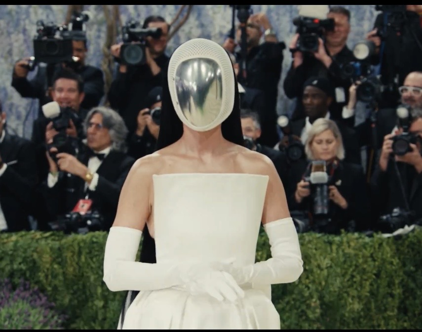
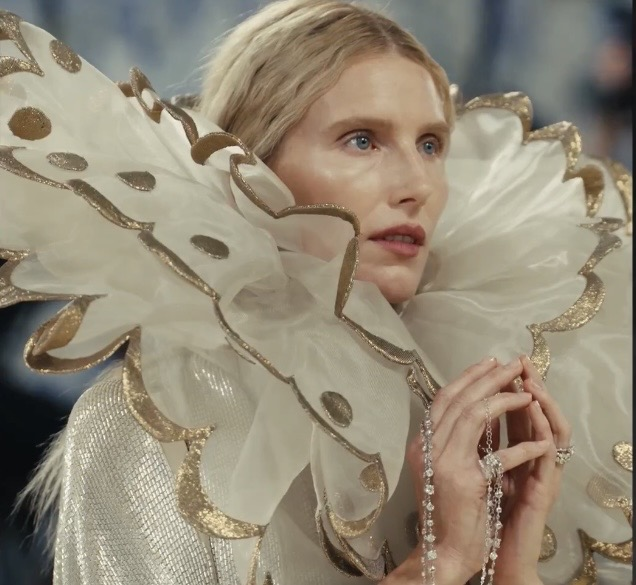
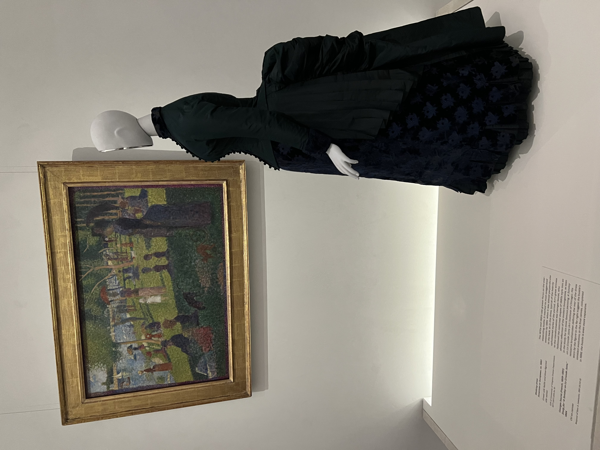

In 1937 New York’s performing arts producer and philanthropist Irene Lewisohn (1886–1944) founded the “Museum of Costume Art,” at Rockefeller Center on Fifth Avenue, and in 1946 the museum merged with the Metropolitan Museum of Art (The Met) where it was renamed The Costume Institute. During that time, Dorothy Shaver (1893–1959,) president of Lord & Taylor, was instrumental in the transfer of the collection. In 1972, fashion editor Diana Vreeland became a special consultant and helped organize unforgettable exhibitions that included “The World of Balenciaga”. In the exhibition catalogue, Vreeland wrote about Spanish designer Cristobal Balenciaga (1895–1972) that “He was the master tailor, the master dressmaker. His voice was low and his smile was warm. He believed totally in the grace and dignity of women and made each and every one of his devoted patrons a unique and extraordinary figure.” (source)
More than three decades later, in 2009, the Brooklyn Museum’s historic costume collection joined The Costume Institute as the “Brooklyn Museum Costume Collection at The Metropolitan Museum of Art”. Presently the collection is the largest costume collection in the world, with more than 35,000 objects from five continents, covering fashion for men, women, and children, spanning from the fifteenth century to our times. Although the merger took place eighty years ago, The Costume Institute has not been funded by The Metropolitan Museum of Art, and therefore external sources have been financing the operations, exhibitions, acquisitions, improvements, research, and preservation. Since 1948, The Costume Institute has been holding an annual fundraising event, known as the Met Gala. In 1995 Anna Wintour, the artistic director of Condé Nast, editor-in-chief of “Vogue”, and a museum Trustee, managed the event, and through the years has turned the Met Gala into a glamorous fundraiser with guests who have arrived from various fields, including fashion, film, business, sports, and music. In addition to its role as a fundraiser, the Met Gala serves as the opening of the museum’s annual fashion exhibition.


Last month, the 2026 Met Gala opened The Costume Institute’s annual exhibition entitled “Costume Art”. The exhibition, in the new, approximately 12,000 square feet Condé M. Nast galleries, revealed five connected spaces, adjacent to the Great Hall. Designed by Peterson Rich Office, the galleries were harmonious with the museum’s structure made of twenty one buildings. The exhibition curator, Andrew Bolton, paired 200 garments with 200 artworks from The Met’s powerful collection and select loans. The artworks included paintings, sculptures, drawings, and decorative arts. Bolton focused on the dressed human figure as the main theme, and the ideas were expressed through various body forms.
One of the body forms in the exhibition is Abstract Body. Viewers can see how the dresses were designed to sculpt the body. During the eighteenth and nineteenth centuries undergarments that included corsets, panniers, crinolines, and bustles were utilized to reflect aesthetics. For “Costume Art” Bolton juxtaposed an 1884 painting by Georges Seurat (1859–1891) entitled “Study for A Sunday on La Grande Jatte” with a “Walking Dress” (ca. 1883). Bolton elevates the role of fashion at The Met, and the garments at the exhibition become conceptual as viewers process connections through the pairing with masterpieces. The exhibition is on view through January 10, 2027.
